vignettes/Benchmark_results.Rmd
Benchmark_results.RmdThe benchmark pipeline (make benchmark,
workflow/Snakefile, config/config.yaml)
prepares each dataset once, fits every method to it, and scores how well
each method ranks the proteins with a known change (E. coli spiked into
a human background in IonStar, UPS1 spiked into yeast in CPTAC) above
the unchanged ones. This vignette reads only the tables the pipeline
exports to inst/extdata.
log_fc), t statistic
(t_statistic) and p-value with the sign of the fold change
(scaled.p_value)protein (model fitted to protein abundances),
peptide (model fitted to peptides, one result per protein),
protein + peptide (hurdle: intensity on proteins, detection
on peptides)| dataset | method | tool_version | level | input | description | fit_seconds |
|---|---|---|---|---|---|---|
| CPTAC_MaxQuant | msqrob2 | msqrob2 1.20.0 | protein + peptide | peptides + proteins | msqrob2 hurdle; intensity estimate where it exists, else the detection estimate | 5.6 |
| CPTAC_MaxQuant | msqrob2_hurdle | msqrob2 1.20.0 | protein + peptide | peptides + proteins | msqrob2 hurdle; Fisher combination of the intensity and detection p-values | 5.4 |
| CPTAC_MaxQuant | prolfqua_deqms | prolfqua 1.9.5 | protein | proteins | lm with DEqMS moderation (variance prior by number of peptides) | 2.3 |
| CPTAC_MaxQuant | prolfqua_deqms_voom | prolfqua 1.9.5 | protein | proteins | limma with vooma precision weights and DEqMS moderation | 0.9 |
| CPTAC_MaxQuant | prolfqua_hurdle_nested | prolfqua 1.9.5 | protein + peptide | peptides | hurdle: lm_impute on median-polished proteins and binomial_firth_nested on peptide detection, Fisher | 7.3 |
| CPTAC_MaxQuant | prolfqua_limma | prolfqua 1.9.5 | protein | proteins | limma empirical Bayes | 0.8 |
| CPTAC_MaxQuant | prolfqua_limpa | prolfqua 1.9.5 | protein | proteins | limpa vooma fit with imputation-aware degrees of freedom on the proteins | 0.9 |
| CPTAC_MaxQuant | prolfqua_limpa_nested | prolfqua 1.9.5 | peptide | peptides | limpa: DPC quantification of the peptides to proteins, vooma fit | 2.9 |
| CPTAC_MaxQuant | prolfqua_lm | prolfqua 1.9.5 | protein | proteins | lm with variance moderation; no contrast where a group has no observations | 2.1 |
| CPTAC_MaxQuant | prolfqua_lm_impute | prolfqua 1.9.5 | protein | proteins | lm with imputed group means where a group has no observations | 2.3 |
| CPTAC_MaxQuant | prolfqua_lmer_nested | prolfqua 1.9.5 | peptide | peptides | mixed model, peptide and sample random effects | 22.7 |
| CPTAC_MaxQuant | prolfqua_ropecaV2_nested | prolfqua 1.9.5 | peptide | peptides | ROPECA, correlation-aware null of the median z-score | 12.3 |
| CPTAC_MaxQuant | prolfqua_ropeca_nested | prolfqua 1.9.5 | peptide | peptides | ROPECA, beta null of the median signed p-value | 8.0 |
| IonStar_FragPipe_MSstats | MSstats | MSstats 4.20.0 | protein | msstats_features | MSstats dataProcess (feature summarization) and groupComparison | 63.9 |
| IonStar_FragPipe_MSstats | msqrob2 | msqrob2 1.20.0 | protein + peptide | peptides + proteins | msqrob2 hurdle; intensity estimate where it exists, else the detection estimate | 12.8 |
| IonStar_FragPipe_MSstats | msqrob2_hurdle | msqrob2 1.20.0 | protein + peptide | peptides + proteins | msqrob2 hurdle; Fisher combination of the intensity and detection p-values | 13.5 |
| IonStar_FragPipe_MSstats | prolfqua_deqms | prolfqua 1.9.5 | protein | proteins | lm with DEqMS moderation (variance prior by number of peptides) | 5.5 |
| IonStar_FragPipe_MSstats | prolfqua_deqms_voom | prolfqua 1.9.5 | protein | proteins | limma with vooma precision weights and DEqMS moderation | 1.5 |
| IonStar_FragPipe_MSstats | prolfqua_hurdle_nested | prolfqua 1.9.5 | protein + peptide | peptides | hurdle: lm_impute on median-polished proteins and binomial_firth_nested on peptide detection, Fisher | 24.5 |
| IonStar_FragPipe_MSstats | prolfqua_limma | prolfqua 1.9.5 | protein | proteins | limma empirical Bayes | 1.1 |
| IonStar_FragPipe_MSstats | prolfqua_limpa | prolfqua 1.9.5 | protein | proteins | limpa vooma fit with imputation-aware degrees of freedom on the proteins | 1.1 |
| IonStar_FragPipe_MSstats | prolfqua_limpa_nested | prolfqua 1.9.5 | peptide | peptides | limpa: DPC quantification of the peptides to proteins, vooma fit | 15.1 |
| IonStar_FragPipe_MSstats | prolfqua_lm | prolfqua 1.9.5 | protein | proteins | lm with variance moderation; no contrast where a group has no observations | 5.7 |
| IonStar_FragPipe_MSstats | prolfqua_lm_impute | prolfqua 1.9.5 | protein | proteins | lm with imputed group means where a group has no observations | 5.1 |
| IonStar_FragPipe_MSstats | prolfqua_lmer_nested | prolfqua 1.9.5 | peptide | peptides | mixed model, peptide and sample random effects | 88.0 |
| IonStar_FragPipe_MSstats | prolfqua_ropecaV2_nested | prolfqua 1.9.5 | peptide | peptides | ROPECA, correlation-aware null of the median z-score | 60.2 |
| IonStar_FragPipe_MSstats | prolfqua_ropeca_nested | prolfqua 1.9.5 | peptide | peptides | ROPECA, beta null of the median signed p-value | 47.7 |
| IonStar_FragPipe_protein | msqrob2_protein | msqrob2 1.20.0 | protein | protein_table | msqrob2 msqrob on the protein table of the search software, no detection model | 6.0 |
| IonStar_FragPipe_protein | proDA | proDA 1.26.0 | protein | protein_table | proDA on the protein table of the search software | 42.2 |
| IonStar_FragPipe_protein | prolfqua_deqms | prolfqua 1.9.5 | protein | proteins | lm with DEqMS moderation (variance prior by number of peptides) | 6.7 |
| IonStar_FragPipe_protein | prolfqua_deqms_voom | prolfqua 1.9.5 | protein | proteins | limma with vooma precision weights and DEqMS moderation | 1.4 |
| IonStar_FragPipe_protein | prolfqua_limma | prolfqua 1.9.5 | protein | proteins | limma empirical Bayes | 1.0 |
| IonStar_FragPipe_protein | prolfqua_limpa | prolfqua 1.9.5 | protein | proteins | limpa vooma fit with imputation-aware degrees of freedom on the proteins | 1.1 |
| IonStar_FragPipe_protein | prolfqua_lm | prolfqua 1.9.5 | protein | proteins | lm with variance moderation; no contrast where a group has no observations | 6.2 |
| IonStar_FragPipe_protein | prolfqua_lm_impute | prolfqua 1.9.5 | protein | proteins | lm with imputed group means where a group has no observations | 5.6 |
| IonStar_MaxQuant | msqrob2 | msqrob2 1.20.0 | protein + peptide | peptides + proteins | msqrob2 hurdle; intensity estimate where it exists, else the detection estimate | 13.0 |
| IonStar_MaxQuant | msqrob2_hurdle | msqrob2 1.20.0 | protein + peptide | peptides + proteins | msqrob2 hurdle; Fisher combination of the intensity and detection p-values | 13.1 |
| IonStar_MaxQuant | prolfqua_deqms | prolfqua 1.9.5 | protein | proteins | lm with DEqMS moderation (variance prior by number of peptides) | 5.7 |
| IonStar_MaxQuant | prolfqua_deqms_voom | prolfqua 1.9.5 | protein | proteins | limma with vooma precision weights and DEqMS moderation | 1.8 |
| IonStar_MaxQuant | prolfqua_hurdle_nested | prolfqua 1.9.5 | protein + peptide | peptides | hurdle: lm_impute on median-polished proteins and binomial_firth_nested on peptide detection, Fisher | 25.4 |
| IonStar_MaxQuant | prolfqua_limma | prolfqua 1.9.5 | protein | proteins | limma empirical Bayes | 1.4 |
| IonStar_MaxQuant | prolfqua_limpa | prolfqua 1.9.5 | protein | proteins | limpa vooma fit with imputation-aware degrees of freedom on the proteins | 1.1 |
| IonStar_MaxQuant | prolfqua_limpa_nested | prolfqua 1.9.5 | peptide | peptides | limpa: DPC quantification of the peptides to proteins, vooma fit | 14.7 |
| IonStar_MaxQuant | prolfqua_lm | prolfqua 1.9.5 | protein | proteins | lm with variance moderation; no contrast where a group has no observations | 6.2 |
| IonStar_MaxQuant | prolfqua_lm_impute | prolfqua 1.9.5 | protein | proteins | lm with imputed group means where a group has no observations | 5.5 |
| IonStar_MaxQuant | prolfqua_lmer_nested | prolfqua 1.9.5 | peptide | peptides | mixed model, peptide and sample random effects | 88.5 |
| IonStar_MaxQuant | prolfqua_ropecaV2_nested | prolfqua 1.9.5 | peptide | peptides | ROPECA, correlation-aware null of the median z-score | 56.2 |
| IonStar_MaxQuant | prolfqua_ropeca_nested | prolfqua 1.9.5 | peptide | peptides | ROPECA, beta null of the median signed p-value | 49.9 |
| IonStar_MaxQuant_protein | msqrob2_protein | msqrob2 1.20.0 | protein | protein_table | msqrob2 msqrob on the protein table of the search software, no detection model | 7.7 |
| IonStar_MaxQuant_protein | proDA | proDA 1.26.0 | protein | protein_table | proDA on the protein table of the search software | 97.4 |
| IonStar_MaxQuant_protein | prolfqua_deqms | prolfqua 1.9.5 | protein | proteins | lm with DEqMS moderation (variance prior by number of peptides) | 6.6 |
| IonStar_MaxQuant_protein | prolfqua_deqms_voom | prolfqua 1.9.5 | protein | proteins | limma with vooma precision weights and DEqMS moderation | 1.4 |
| IonStar_MaxQuant_protein | prolfqua_limma | prolfqua 1.9.5 | protein | proteins | limma empirical Bayes | 1.0 |
| IonStar_MaxQuant_protein | prolfqua_limpa | prolfqua 1.9.5 | protein | proteins | limpa vooma fit with imputation-aware degrees of freedom on the proteins | 1.2 |
| IonStar_MaxQuant_protein | prolfqua_lm | prolfqua 1.9.5 | protein | proteins | lm with variance moderation; no contrast where a group has no observations | 6.3 |
| IonStar_MaxQuant_protein | prolfqua_lm_impute | prolfqua 1.9.5 | protein | proteins | lm with imputed group means where a group has no observations | 6.4 |
IonStar, MaxQuant peptides.txt
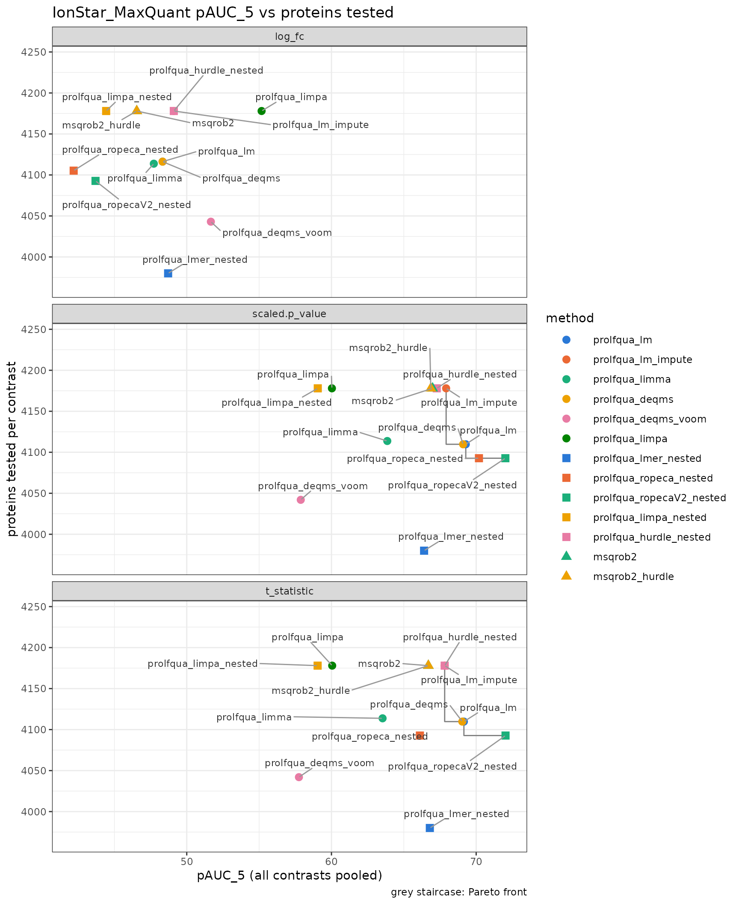
| model | level | contrasts computed | AUC / log_fc | AUC / scaled.p_value | AUC / t_statistic | pAUC_10 / log_fc | pAUC_10 / scaled.p_value | pAUC_10 / t_statistic |
|---|---|---|---|---|---|---|---|---|
| prolfqua_ropecaV2_nested | peptide | 16371 | 92.0 | 93.7 | 94.1 | 64.0 | 77.9 | 77.9 |
| prolfqua_ropeca_nested | peptide | 16371 | 91.8 | 93.6 | 94.0 | 63.0 | 77.1 | 75.8 |
| prolfqua_lm | protein | 16439 | 92.8 | 93.6 | 93.6 | 67.1 | 75.6 | 75.6 |
| prolfqua_deqms | protein | 16439 | 92.8 | 93.5 | 93.5 | 67.1 | 75.4 | 75.4 |
| prolfqua_lm_impute | protein | 16712 | 92.3 | 92.8 | 92.8 | 66.4 | 73.9 | 73.9 |
| msqrob2_hurdle | protein + peptide | 16712 | 92.6 | 92.8 | 93.0 | 66.2 | 73.6 | 72.9 |
| prolfqua_hurdle_nested | protein + peptide | 16712 | 92.3 | 92.5 | 92.8 | 66.4 | 73.4 | 73.9 |
| prolfqua_lmer_nested | peptide | 15920 | 92.6 | 93.0 | 93.1 | 66.3 | 73.2 | 73.4 |
| msqrob2 | protein + peptide | 16712 | 92.6 | 93.0 | 93.0 | 66.2 | 73.1 | 72.9 |
| prolfqua_limma | protein | 16455 | 91.5 | 91.6 | 91.6 | 66.3 | 70.8 | 70.6 |
| prolfqua_limpa | protein | 16712 | 91.7 | 91.2 | 91.2 | 69.3 | 67.4 | 67.4 |
| prolfqua_limpa_nested | peptide | 16712 | 92.6 | 92.1 | 92.1 | 63.4 | 66.4 | 66.4 |
| prolfqua_deqms_voom | protein | 16168 | 94.0 | 92.5 | 92.5 | 69.9 | 65.9 | 65.8 |
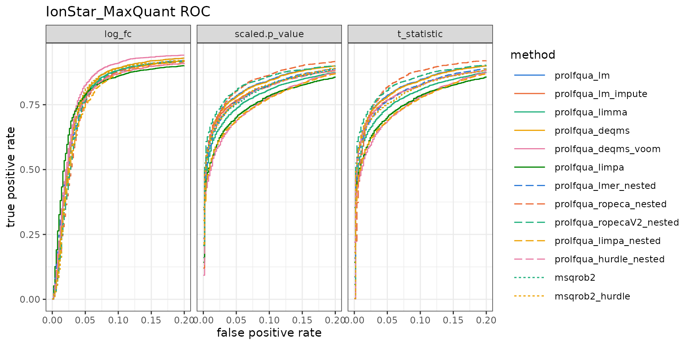
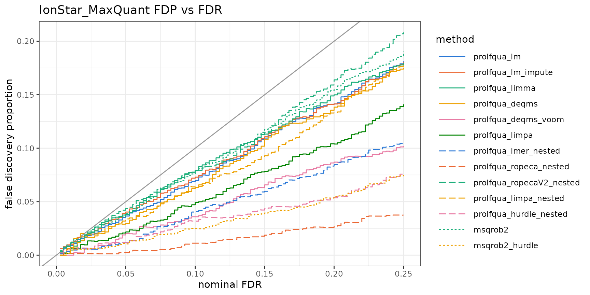
IonStar, MaxQuant proteinGroups.txt (protein level)
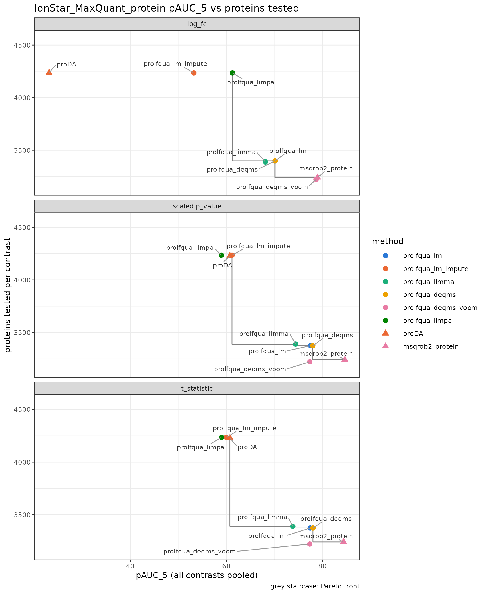
| model | level | contrasts computed | AUC / log_fc | AUC / scaled.p_value | AUC / t_statistic | pAUC_10 / log_fc | pAUC_10 / scaled.p_value | pAUC_10 / t_statistic |
|---|---|---|---|---|---|---|---|---|
| msqrob2_protein | protein | 12965 | 97.1 | 97.2 | 97.2 | 86.9 | 88.0 | 87.9 |
| prolfqua_deqms | protein | 13494 | 95.6 | 95.6 | 95.6 | 81.2 | 82.5 | 82.6 |
| prolfqua_deqms_voom | protein | 12884 | 97.0 | 96.3 | 96.3 | 86.9 | 82.3 | 82.3 |
| prolfqua_lm | protein | 13494 | 95.6 | 95.6 | 95.6 | 81.2 | 82.2 | 82.3 |
| prolfqua_limma | protein | 13556 | 92.7 | 92.7 | 92.7 | 78.9 | 79.1 | 78.8 |
| prolfqua_lm_impute | protein | 16940 | 87.9 | 88.3 | 88.1 | 63.8 | 65.9 | 65.4 |
| proDA | protein | 16916 | 87.1 | 88.7 | 88.7 | 49.7 | 65.8 | 65.8 |
| prolfqua_limpa | protein | 16940 | 87.2 | 86.9 | 86.9 | 66.3 | 62.8 | 62.9 |
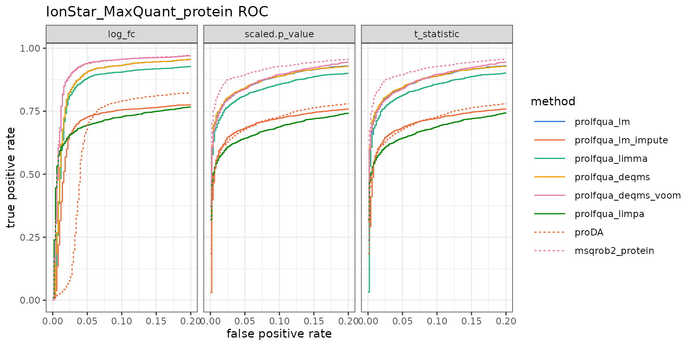
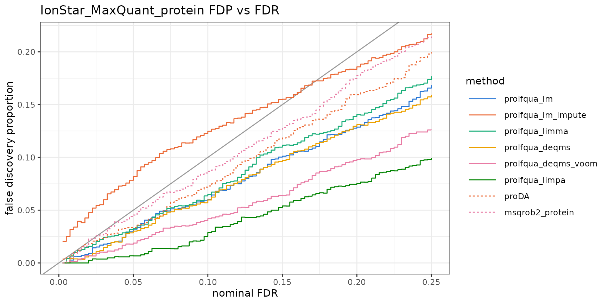
IonStar, FragPipe MSstats.csv
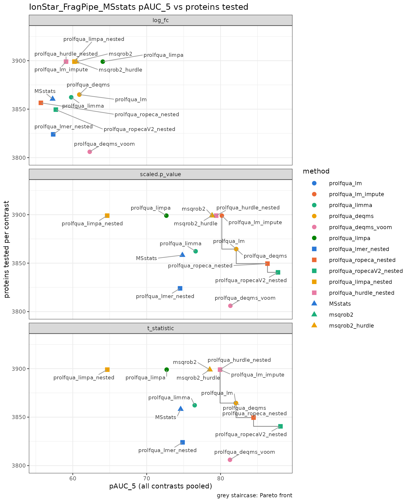
| model | level | contrasts computed | AUC / log_fc | AUC / scaled.p_value | AUC / t_statistic | pAUC_10 / log_fc | pAUC_10 / scaled.p_value | pAUC_10 / t_statistic |
|---|---|---|---|---|---|---|---|---|
| prolfqua_ropecaV2_nested | peptide | 15362 | 96.0 | 97.6 | 98.3 | 76.5 | 91.6 | 92.0 |
| prolfqua_ropeca_nested | peptide | 15398 | 95.8 | 97.7 | 98.1 | 75.4 | 90.2 | 90.0 |
| prolfqua_lm | protein | 15458 | 95.9 | 96.9 | 96.9 | 77.7 | 86.2 | 86.2 |
| prolfqua_deqms | protein | 15458 | 95.9 | 96.9 | 96.9 | 77.7 | 86.2 | 86.2 |
| prolfqua_deqms_voom | protein | 15224 | 96.2 | 97.1 | 97.1 | 79.0 | 86.1 | 86.1 |
| prolfqua_lm_impute | protein | 15596 | 95.1 | 96.1 | 96.1 | 75.3 | 84.1 | 84.1 |
| msqrob2_hurdle | protein + peptide | 15596 | 95.3 | 96.0 | 96.1 | 77.3 | 83.9 | 83.1 |
| prolfqua_hurdle_nested | protein + peptide | 15596 | 95.1 | 95.9 | 96.1 | 75.3 | 83.9 | 84.1 |
| msqrob2 | protein + peptide | 15596 | 95.3 | 96.1 | 96.1 | 77.3 | 83.4 | 83.1 |
| prolfqua_limma | protein | 15449 | 94.2 | 94.9 | 94.9 | 76.4 | 81.7 | 81.7 |
| MSstats | protein | 15433 | 95.6 | 96.6 | 96.6 | 74.5 | 81.5 | 81.5 |
| prolfqua_lmer_nested | peptide | 15296 | 95.5 | 96.0 | 96.0 | 74.5 | 80.6 | 80.8 |
| prolfqua_limpa | protein | 15596 | 94.0 | 94.6 | 94.6 | 77.6 | 78.6 | 78.6 |
| prolfqua_limpa_nested | peptide | 15596 | 95.2 | 94.6 | 94.6 | 75.2 | 72.9 | 72.9 |
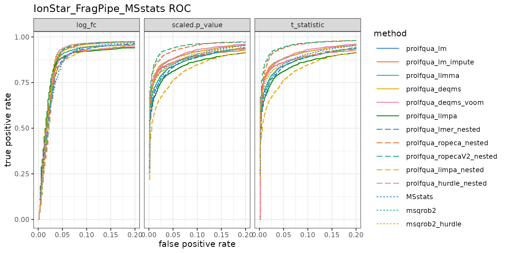
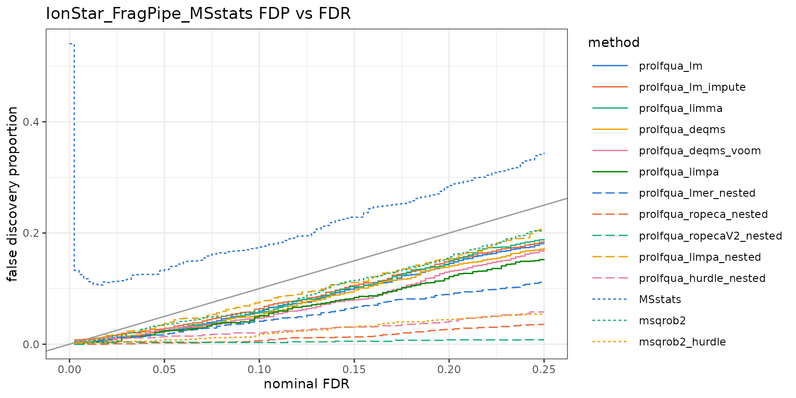
IonStar, FragPipe combined_protein.tsv (protein level)
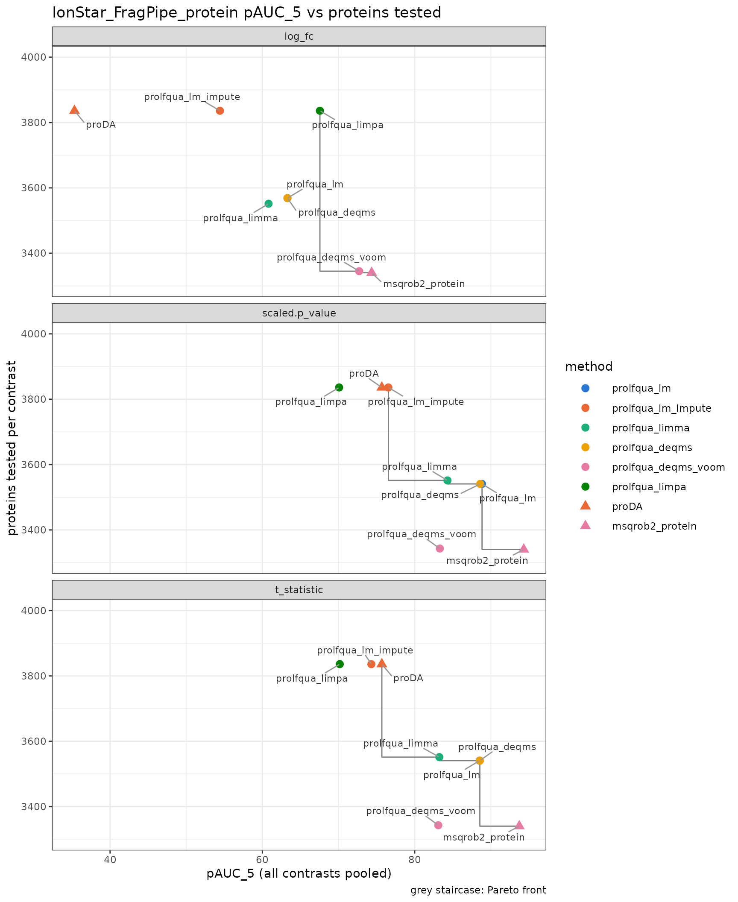
| model | level | contrasts computed | AUC / log_fc | AUC / scaled.p_value | AUC / t_statistic | pAUC_10 / log_fc | pAUC_10 / scaled.p_value | pAUC_10 / t_statistic |
|---|---|---|---|---|---|---|---|---|
| msqrob2_protein | protein | 13361 | 98.2 | 99.2 | 99.2 | 86.6 | 96.1 | 95.8 |
| prolfqua_lm | protein | 14163 | 97.0 | 98.3 | 98.3 | 80.1 | 91.8 | 91.7 |
| prolfqua_deqms | protein | 14163 | 97.0 | 98.3 | 98.3 | 80.1 | 91.6 | 91.7 |
| prolfqua_deqms_voom | protein | 13372 | 98.1 | 98.2 | 98.1 | 85.7 | 88.0 | 87.9 |
| prolfqua_limma | protein | 14206 | 92.8 | 93.9 | 93.9 | 76.9 | 87.4 | 86.8 |
| prolfqua_lm_impute | protein | 15344 | 93.1 | 94.2 | 94.1 | 70.1 | 80.4 | 79.4 |
| proDA | protein | 15344 | 91.9 | 94.2 | 94.2 | 61.7 | 80.0 | 80.0 |
| prolfqua_limpa | protein | 15344 | 90.9 | 91.6 | 91.6 | 75.6 | 74.4 | 74.4 |
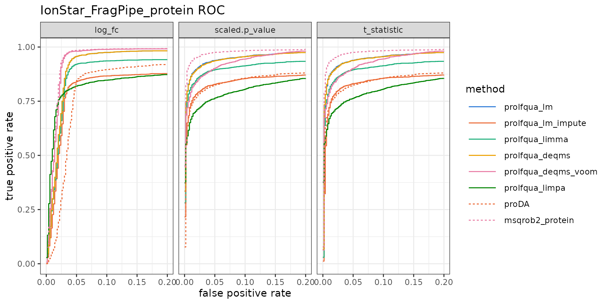
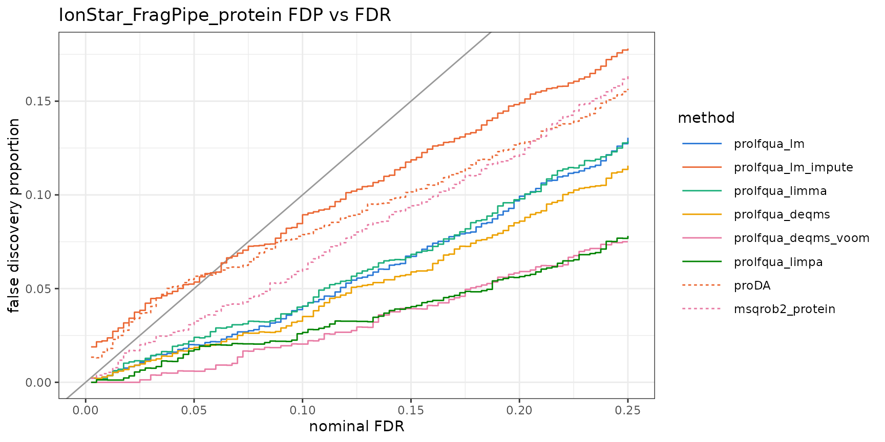
CPTAC study 6, UPS1 in yeast, MaxQuant peptides.txt (Bioconductor MsDataHub)
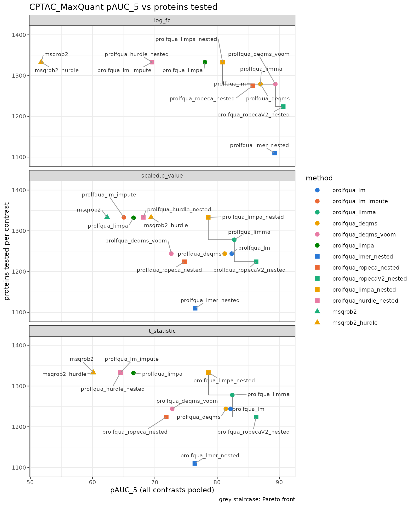
| model | level | contrasts computed | AUC / log_fc | AUC / scaled.p_value | AUC / t_statistic | pAUC_10 / log_fc | pAUC_10 / scaled.p_value | pAUC_10 / t_statistic |
|---|---|---|---|---|---|---|---|---|
| prolfqua_ropecaV2_nested | peptide | 1224 | 96.5 | 96.4 | 96.4 | 92.8 | 91.0 | 91.0 |
| prolfqua_limma | protein | 1278 | 93.4 | 92.8 | 92.7 | 89.0 | 84.5 | 84.4 |
| prolfqua_lm | protein | 1244 | 93.4 | 92.7 | 92.7 | 89.0 | 84.0 | 84.0 |
| prolfqua_deqms | protein | 1244 | 93.4 | 92.6 | 92.6 | 89.0 | 83.1 | 83.2 |
| prolfqua_ropeca_nested | peptide | 1224 | 91.8 | 93.0 | 95.1 | 88.6 | 82.6 | 80.9 |
| prolfqua_limpa_nested | peptide | 1333 | 97.6 | 95.4 | 95.4 | 86.8 | 81.2 | 81.3 |
| prolfqua_lmer_nested | peptide | 1110 | 93.9 | 90.8 | 90.8 | 91.6 | 77.8 | 77.8 |
| prolfqua_deqms_voom | protein | 1244 | 94.5 | 92.5 | 92.5 | 91.7 | 76.7 | 76.8 |
| msqrob2_hurdle | protein + peptide | 1333 | 91.2 | 90.0 | 88.8 | 72.5 | 74.0 | 66.1 |
| prolfqua_hurdle_nested | protein + peptide | 1333 | 86.5 | 84.6 | 85.3 | 72.5 | 73.2 | 67.1 |
| prolfqua_limpa | protein | 1332 | 91.5 | 89.3 | 89.3 | 79.5 | 69.4 | 69.3 |
| msqrob2 | protein + peptide | 1333 | 91.2 | 89.1 | 88.8 | 72.5 | 68.9 | 66.1 |
| prolfqua_lm_impute | protein | 1333 | 86.5 | 85.3 | 85.3 | 72.5 | 67.3 | 67.1 |
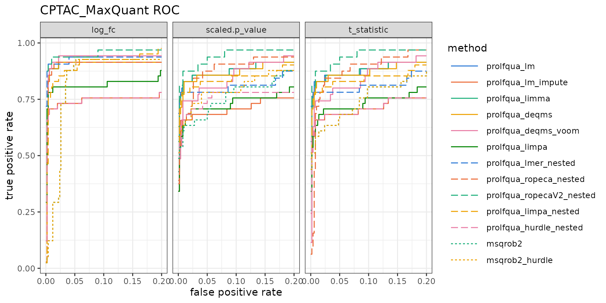
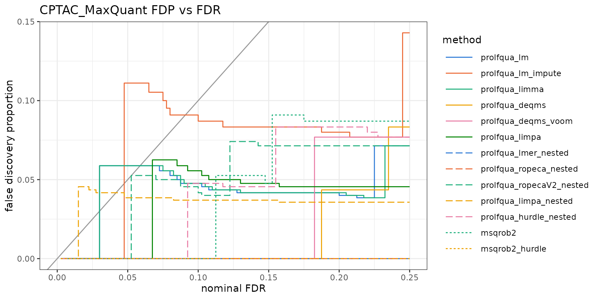